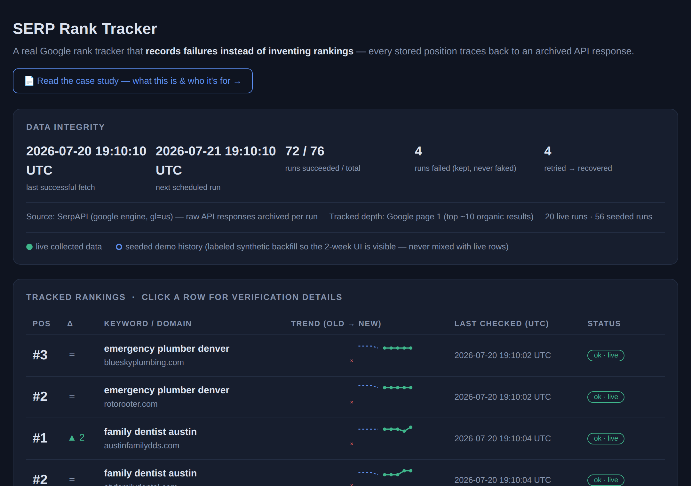

Every live-collected number on the dashboard can be audited down to the raw API response it came from — data integrity enforced by the schema and the pipeline, not by good intentions.
My Role
On a data pipeline, the value isn't lines of code — it's deciding where honesty has to be enforced instead of hoped for. That's where the design time went:
What It Does

Portfolio demo running on real data: live daily collection via SerpAPI started 2026-07-18, so the live history grows every day. Keywords are public sample queries on public domains — no client data, no private analytics.
The Problem It Solves
Rank trackers tend to fail quietly: a fetch times out and the chart still shows a smooth line; demo data blends silently with measured data; "top-100 tracking" claims outrun what the parser actually saw.
For anyone buying SEO reporting, the core question is "are these numbers real?" This project makes the honest answer structural — enforced by the schema and the pipeline, not by good intentions.
What This Means For A Client
The Hard Part
The differentiator isn't the dashboard; it's that honesty is structural. Four design decisions make it so:
failed with its error message and attempt count, and a failed check is written for every tracked domain. Gaps render as gaps — nothing is interpolated or carried forward.layer='seeded', enforced by a SQLite CHECK constraint, rendered with distinct hollow markers and a badge, and flagged in the CSV. Live and seeded rows are never blended — and the seeded history deliberately includes a failed run, so the demo shows its own failure handling.result_depth — how many organic results were actually parsed — for auditing. The demo tracks and labels Google page 1.Kept Deliberately Small — On Purpose
Verified Before Shipping
The design was also pressure-tested against likely buyer objections before build — which is why the integrity panel sits at the top of the page and the scope stays inside what a visitor can verify in 30 seconds.
Natural Extensions For Client Work
Alert emails on rank drops · competitor columns · multi-location tracking · deeper pagination · scheduled PDF/email reports — each a contained addition on the same runs/checks schema.